Curvature measured from surveyors' triangles
Each historical triangle's angle excess, divided by its area, gives the Gaussian curvature of the ground it was drawn on. Under a selection and weighting rule fixed before the run, 391 triangles with angles and side lengths measured on the ground give an intrinsic K within 0.6–1.0σ of the ellipsoid's extrinsic curvature 1/(MN).
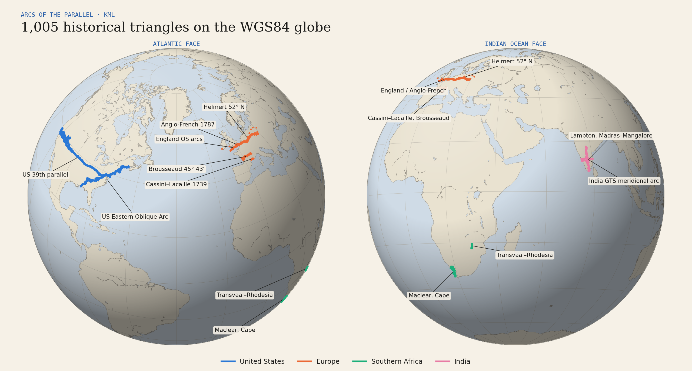
Twelve folders, 957 stations, 1,005 triangles
Every station carries its latitude and longitude as printed in the source, plus a citation. Every triangle carries its printed angles, the printed angle sum, the printed spherical excess, printed sides, and a page reference. All heights are zero, so this is a purely horizontal data set.
- Struve Geodetic Arc: the folder is empty, although its heading says 257 triangles.
- Lambton, Madras–Mangalore: 41 stations and no triangle polygons.
- Brousseaud 45°43′: 2 of the 142 triangles named in the heading. Its "spherical" angles are mean angles plus ε/3, so the excess is computed and those two are excluded.
- US 39th parallel: 465 of 504 polygons present.
- Faults, checked against the printed sources: five triangles have angles that cannot close. Three are misprints in Schott's own tables, confirmed against the scanned pages. In each, one angle's degrees are wrong: Ibepah printed 10° for 110° (1900, p. 591), Cherry Ridge 20° for 28° (1900, p. 414), and Mount Pleasant 19° for 91° (1902, p. 131). The side lengths Schott printed alongside give the true angle by the law of cosines, so these three are corrected and kept. The other two, one in Helmert and one in Lambton, cannot be checked yet and are dropped. Correction: an earlier version of this page also wrongly dropped 25 of the largest 39th-parallel triangles. Their printed angle sums give seconds only, and sums more than 30″ above 180° were misread. They are now included.
- Source check: 45 triangles (135 angles) on five pages of Schott 1900 and 1902 were compared with the KML entry by entry. Every value matches, including Schott's convention of carrying seconds above 60 (for example 48° 03′ 65.671″).
That leaves 935 triangles with three usable observed angles. Areas run from 0.36 to 14,527 km², and observed excesses from −16″ to +75″ (mean 4.8″).
Angle excess over area is curvature
For a small geodesic triangle, the Gauss–Bonnet theorem ties the excess of the three angles over π to the curvature integrated over the triangle's area:
Both the angles and the area are measured on the surface. No reference to a third dimension enters. The ellipsoid's curvature, computed from how it bends in space, is the product of its principal curvatures:
The fit is the ratio q = Kintrinsic/Kell, estimated by weighted least squares through the origin on εobs against A·Kell(φ). It is pooled across surveys for the main result and also reported for each survey (section 4). Areas come from the printed side lengths, so they are measured on the ground. Coordinate areas, used in the first pass (Appendix C), agree with them to a few parts in 10,000. The excess uses the angles as observed: Helmert's observed seconds rather than his adjusted finals, Roy and Mudge's observed column, and Cassini's angles reduced to centre.
How the surveys were made, and how sure we can be of them
The core three surveys are the US 39th parallel, the US Eastern Oblique Arc and Maclear's Cape arc. Their full reports are scanned and online, and they carry most of the weight. The other surveys are summarised in the appendix rows. Where a fact comes from a secondary source rather than the original report, it is marked as such. Facts not yet confirmed are marked "unconfirmed".
3.1 · Surveys, dates and reports
| Survey | Field work | Published | Report | Scan |
|---|---|---|---|---|
| US Eastern Oblique Arc, Calais ME to New Orleans | 1833–1898 | 1902 | Schott, C&GS Special Pub. 7 (440 pp.) | archive.org, full text |
| US 39th parallel, Cape May NJ to Point Arena CA | 1871–c. 1898 (western section 1876–1896) | 1900 | Schott, C&GS Special Pub. 4 (930 pp.) | HathiTrust, full view |
| Maclear, Cape of Good Hope | 1837–1848 | 1866 | Maclear, Verification and Extension of La Caille's Arc, 2 vols, ed. Airy | HathiTrust, full view |
| Helmert, Europe 52° N | compiled from national triangulations; dates vary | 1893, 1896 | Helmert, Längengradmessung in 52° Breite, Heft 1; Börsch & Krüger | Silesian Digital Library (not opened) |
| Transvaal–Rhodesia connection | unconfirmed | 1908 | Morris & Gill, Geodetic Survey of South Africa Vol. V | not found |
| Lambton, Great Arc, 8° 9′–18° 3′ N | 1800–c. 1815 | 1816, 1820 | Asiatick Researches vols 12, 13 | archive.org |
| Lambton, Madras–Mangalore | 1802–1806 | 1811 | Lambton 1811 | not checked |
| England OS arcs near 50° 44′ N | 1787–1796 | 1790–1801 | Roy; Williams & Mudge | not checked |
| Anglo-French Greenwich–Paris link | 1784 (base), 1787–1788 | 1790 | Roy, Phil. Trans. | not checked |
| Cassini de Thury & Lacaille, 43° 32′ N | 1739–1740 | 1744 | Cassini de Thury, La méridienne vérifiée | not checked |
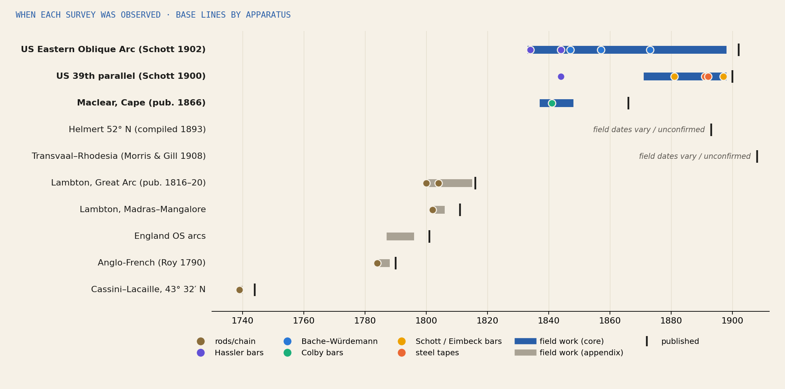
3.2 · Base lines: the only measured lengths
Every survey measured one or more base lines directly on level ground. Every other length was computed from angles, chaining triangle to triangle from a base. Bases further along the chain served as checks. Lengths below are the span between the base-end stations in the KML. Where a printed length exists, it is shown and agrees with the span.
| Survey | Base | Year | Apparatus | Length |
|---|---|---|---|---|
| Eastern Oblique | Fire Island NY | 1834 | Hassler's four 2 m iron bars | 14.06 km |
| Massachusetts | 1844 | Hassler apparatus | 17.33 km | |
| Kent Island MD | 1843–44 | Hassler apparatus (J. Ferguson) | 8.69 km | |
| Dauphin Island AL | 1847 | Bache–Würdemann compensating bars (first use) | 10.66 km | |
| Epping ME | 1857 | Bache–Würdemann: two 6 m bars, brass and iron, contact-level | 8,715.942 m printed | |
| Atlanta GA | 1872–73 | Bache–Würdemann, measured three times | 9.34 km | |
| 39th parallel | Kent Island MD | 1843–44 | shared with the Eastern Oblique Arc | 8.69 km |
| St Albans WV | 1892 | steel tapes | 3.87 km | |
| Holton IN | 1891 | steel tapes | 5.50 km | |
| Olney IL | unconfirmed | unconfirmed | 6.78 km | |
| American Bottom IL | unconfirmed | unconfirmed | 7.27 km | |
| Versailles MO | unconfirmed | unconfirmed | 7.64 km | |
| Salina KS | unconfirmed | unconfirmed | 6.55 km | |
| El Paso CO | unconfirmed | unconfirmed | 11.29 km | |
| Salt Lake UT | 1897 | Eimbeck's duplex bars | 11.20 km | |
| Yolo CA | 1881 | Schott's contact-compensating apparatus | 17.49 km | |
| Maclear | Zwartland (Malmesbury) | 30 Oct 1840 – 5 Apr 1841 | Colby compensation bars; standard: Cape 10 ft bar A; checked by splitting into six sections tied by triangulation | 42,819.065 ft = 13.051 km printed |
| Lambton | Bangalore; St Thomas Mount (Madras) | 1800; 1802 | Ramsden blistered-steel 100 ft chain, laid in wooden coffers on pickets, thermometers, 28 lb tension weight | 7.43 mi; 40,006.4 ft |
| Roy | Hounslow Heath (Hampton Poor-house – King's Arbour) | 1784 | wooden rods, then glass rods; later Ramsden steel chain | 27,404.7 ft printed |
| Roy (check) | Romney Marsh (High Nook – Ruckinge) | 1787 | steel chain | 28,532.92 ft printed |
| Cassini–Lacaille | La Crau (Tour de Salon – Signal de la Crau) | 1739 | rods, in toises | 9,353 toises 4 pieds ≈ 18.23 km |
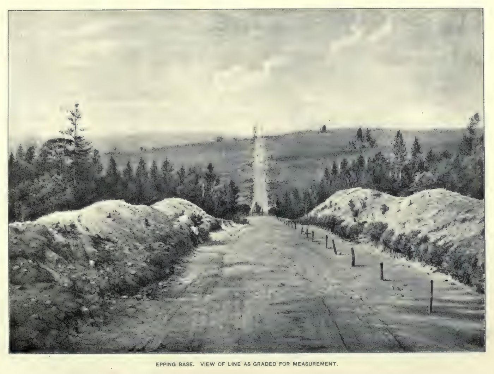
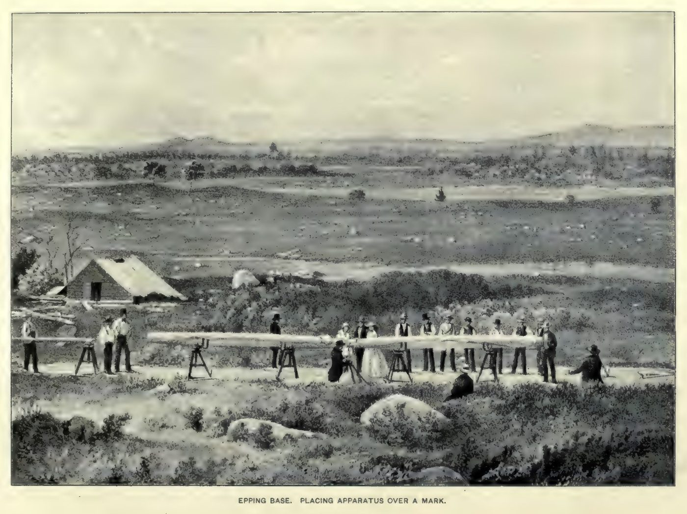
Cross-check: the ten 39th-parallel bases sum to 86.3 km from the KML coordinates, the longest being Yolo at 17.49 km. The 1911 Britannica gives "ten base lines total 86 km; the longest exceeds 17 km". The Epping span in the KML, 8.72 km, matches Schott's printed 8,715.942 m.
3.3 · Angle measurement: instruments and method
- US Coast & Geodetic Survey (both US arcs, from the Eastern Oblique report and NOAA's history):
- Theodolites: a 30-inch Troughton & Simms "great theodolite" (in use 1836 until destroyed by a tornado at Sawnee, Georgia, in November 1873); 20-inch Würdemann instruments from 1873, with three improved Dresden-built copies in 1876–77; a 12-inch theodolite built by the Survey's own Instrument Division (Schott 1902, Plate 20); 10–12-inch repeating theodolites for some early segments.
- Method: directions reduced by Bessel's method at direction-theodolite stations; at repeating-theodolite stations, three direct and three reversed repetitions per set. A pointing more than 4″ from the station mean was rejected.
- Signals: heliotropes with 2–4-inch mirrors from the 1840s to 1902, seen up to 192 miles (Mount Shasta to Mount Helena, 1879). Appendix D draws this line to scale, with the mountain heights and the Earth bulge between them; telescopes sometimes on towers about 14 m high.
- Which theodolite occupied which 39th-parallel station is in Schott 1900 but not yet extracted.
- Maclear: the "Fuller" theodolite by Thomas Jones and the Beaufort theodolite by Reichenbach & Ertel (lent by Sir Francis Beaufort) for angles. A Bradley zenith sector with a 12½ ft telescope and a repeating instrument by Dollond were used for latitudes and zenith distances, which are not used here.
- Appendix surveys: Roy used Ramsden's great 36-inch theodolite, the first instrument able to resolve spherical excess. The Ordnance Survey later added an 18-inch Ramsden and a 24-inch Troughton & Simms. Lambton used a 36-inch Cary theodolite and an 18-inch Cary repeating theodolite.
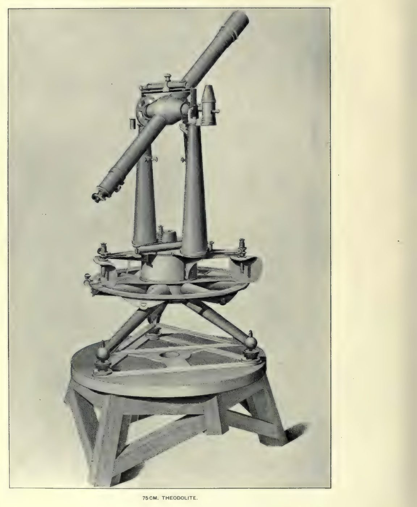
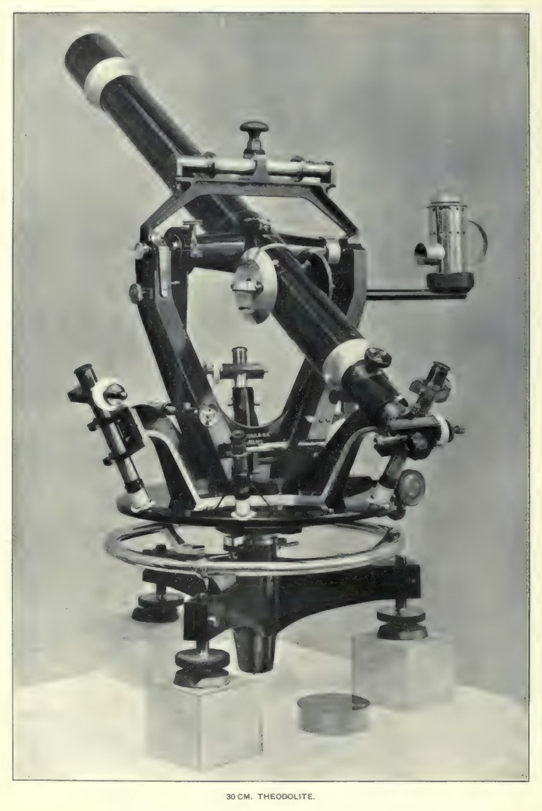
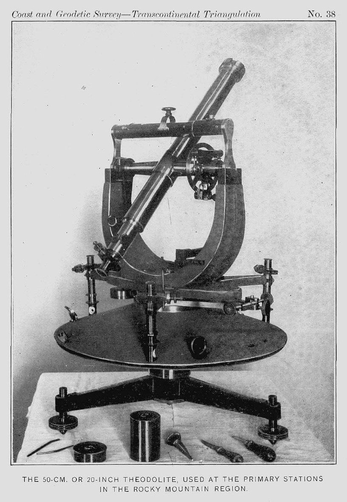
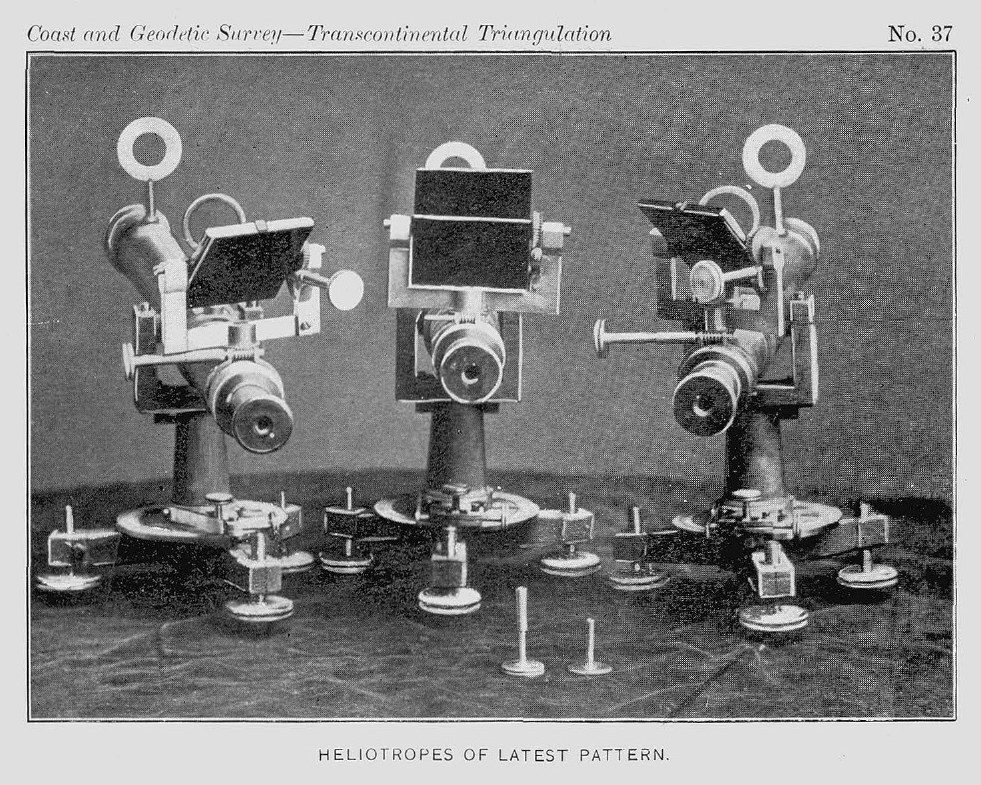
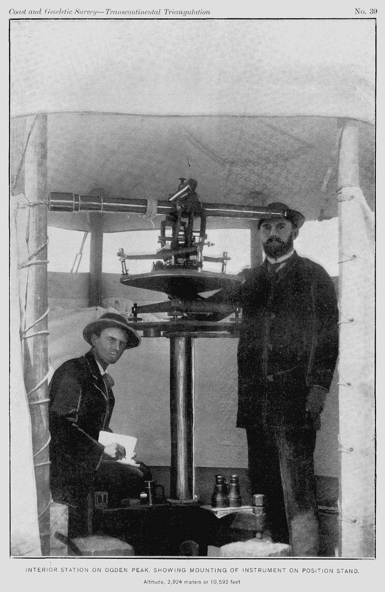
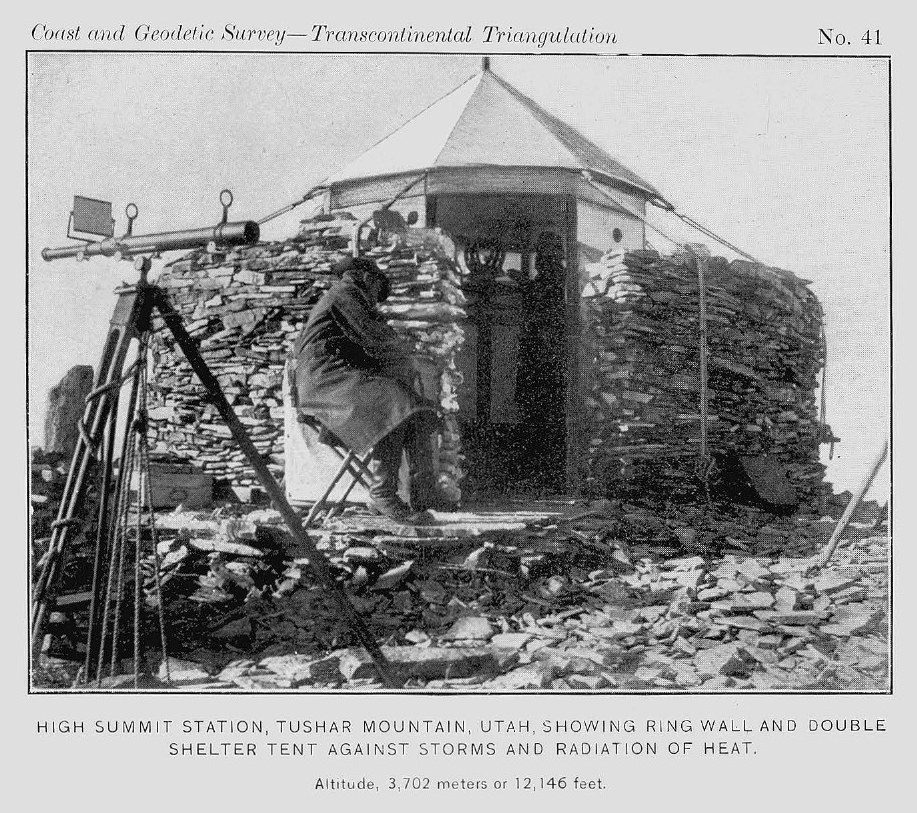
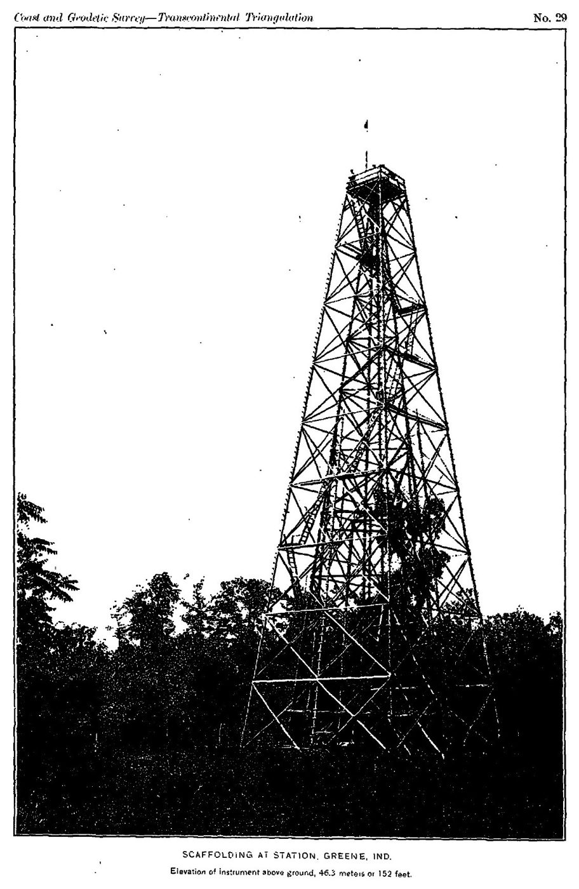
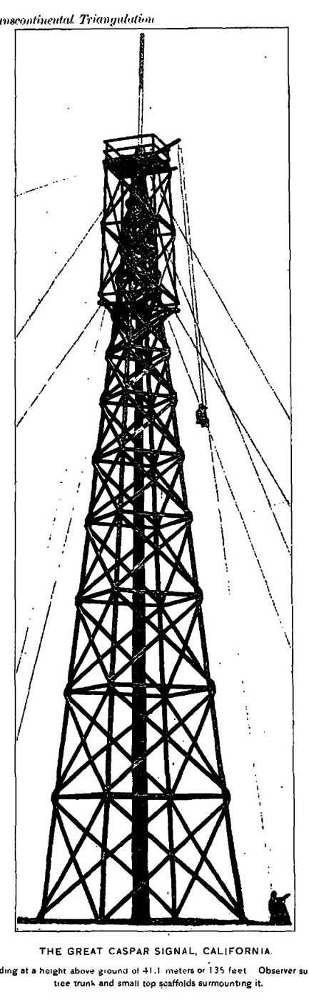
All angles are optical: a telescope pointing at a heliotrope, lamp or pole, read on a graduated horizontal circle levelled to the local plumb line. No long distance in any survey was measured directly.
3.4 · How the error bars here were determined
- Closure miss per triangle. r = (α₁ + α₂ + α₃ − 180°) − A·Kell, using the observed angles from before any adjustment, and the area from the printed sides. The A·Kell term is under 1% of a typical r, so the choice of reference curvature does not affect the noise estimate.
- Robust spread. σclosure = 1.4826 × median absolute deviation of r within each survey. This resists the occasional blunder or transcription slip.
- Per-angle error. σangle = σclosure / √3, assuming the three angles are independent and equally good.
- Independent check. Helmert prints the correction v he applied to each of 186 angles. Their rms is ±0.65″, against ±0.59″ from his closures.
- Propagation to K. Weighted least squares through the origin (ε = K·A), with sandwich variance for the provenance weights and inflation by √(χ²/dof). The survey-to-survey version, which inflates by 1.48, is reported alongside.
| Survey | triangles | σ closure | σ one angle |
|---|---|---|---|
| US 39th parallel | 449 | ±1.26″ | ±0.72″ |
| US Eastern Oblique | 267 | ±1.40″ | ±0.81″ |
| Maclear, Cape | 64 | ±1.80″ | ±1.04″ |
| Helmert 52° N | 61 | ±1.03″ | ±0.59″ |
| Transvaal–Rhodesia | 17 | ±1.35″ | ±0.78″ |
| India GTS | 10 | ±1.13″ | ±0.65″ |
| England OS | 42 | ±1.44″ | ±0.83″ |
| Anglo-French | 19 | ±0.85″ | ±0.49″ |
| Cassini–Lacaille | 6 | ±15.2″ | ±8.8″ |
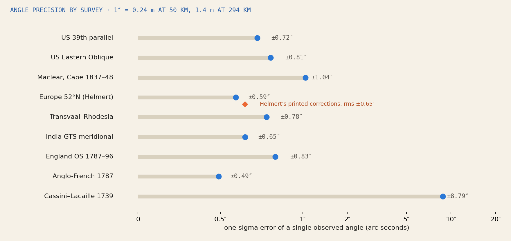
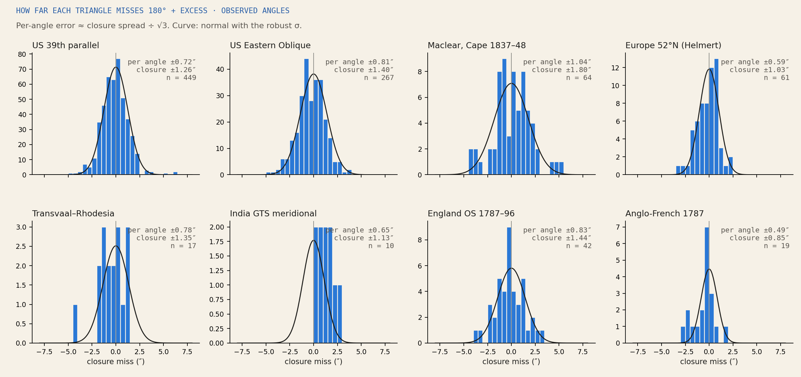
3.5 · Signal against noise, triangle by triangle
The measuring noise is about the same for every triangle: ±1.3″ on the closure, set by how well a theodolite can point. The curvature signal grows with area. Small triangles therefore cannot see curvature one at a time, and large ones see it clearly. Of the 780 triangles in the three core surveys, 336 show an expected excess more than twice the noise.
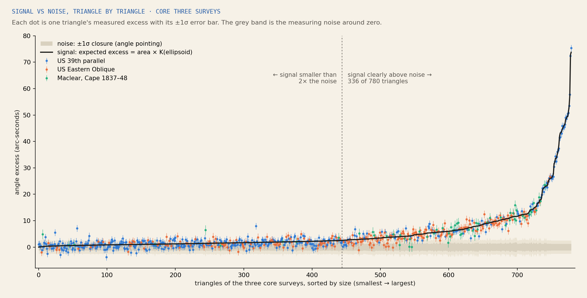
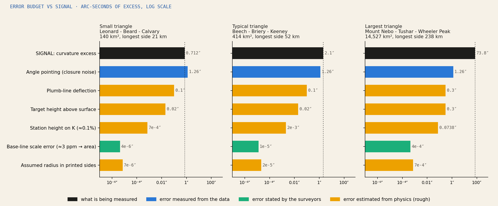
| Small | Typical | Largest | |
|---|---|---|---|
| Triangle | Leonard – Beard – Calvary | Beech – Briery – Keeney | Mount Nebo – Tushar – Wheeler Peak |
| Area | 140 km² | 414 km² | 14,527 km² |
| Signal: curvature excess | 0.71″ | 2.1″ | 73.8″ |
| Angle pointing, measured | 1.26″ | 1.26″ | 1.26″ |
| Plumb-line deflection, estimate | ~0.1″ | ~0.1″ | ~0.3″ |
| Signal height above ground, estimate | ~0.02″ | ~0.02″ | ~0.3″ |
| Station height effect on K | 0.0007″ | 0.002″ | 0.07″ |
| Base-line scale, stated ~3 ppm | 4×10⁻⁶″ | 1×10⁻⁵″ | 4×10⁻⁴″ |
| Assumed radius in printed sides | 7×10⁻⁶″ | 2×10⁻⁵″ | 7×10⁻⁴″ |
| Signal ÷ pointing noise | 0.6 | 1.7 | 59 |
The weak link is the angles, not the lengths. That is why the analysis weights triangles by area squared, and why the main result keeps only triangles whose signal exceeds twice their noise. The smaller triangles stay on the page, greyed in the fit plot, and are fitted in full in Appendix A.
3.6 · Stated equipment and error values from the sources
Nineteenth-century reports quote probable error (p.e.), the 50% bound. A one-sigma error is p.e. ÷ 0.6745.
| Item | Stated value | ≈ 1σ | Source |
|---|---|---|---|
| Epping base, 1857, 8,715.942 m | p.e. ±0.0158 m (1 in 552,000) | ±23 mm | Schott 1902 |
| Hassler bar apparatus, 1830s–40s | average 1 : 200,000 | 5 ppm | NOAA SP NOS NGS 5 |
| Bache–Würdemann compensating bars | average 1 : 310,000 | 3.2 ppm | NOAA SP NOS NGS 5 |
| Invar tapes, after 1906, for comparison | 1 : 675,000 or better | ≤ 1.5 ppm | NOAA SP NOS NGS 5 |
| Epping net, single direction, per station | p.e. ±0.86″ to ±1.37″ | ±1.3″ to ±2.0″ | Schott 1902, p. 29 |
| Epping net, mean observed direction (116 directions) | p.e. ±0.24″ | ±0.36″ | Schott 1902, p. 29 |
| Epping net, mean triangle closure (46 triangles) | 1.09″ | — | Schott 1902, p. 29 |
| C&GS rejection limit | 4″ from the station mean | — | NOAA SP NOS NGS 5 |
| Lambton, Bangalore check base, 1804 | computed and measured lengths agree to 3.7 in after about 160 miles of triangulation | — | secondary (IISc summary) |
| Ordnance Survey absolute azimuths | p.e. under 0.4″ at 6 stations, 0.5″ at 12, 0.7″ at 34 | — | 1911 Britannica |
| 39th-parallel arc, equatorial radius a | 6,377,897 m, p.e. ±65 m | ±96 m | 1911 Britannica, from Schott 1900 |
| Eastern Oblique Arc, a | 6,378,041 m, p.e. ±80 m | ±119 m | 1911 Britannica, from Schott 1902 |
These agree with what the closures show here. A mean absolute closure of 1.09″ corresponds to σ ≈ 1.37″, because the mean absolute value of a normal error is 0.80σ. That matches the ±1.40″ found here for the Eastern Oblique Arc as a whole. Schott's ±0.36″ (1σ) for a mean direction implies about ±0.5″ for an angle, which is two directions, against ±0.81″ here across the whole arc. The difference is plausible: Epping is one well-observed base net, while the whole arc spans 65 years of instruments. Maclear's and Lambton's own stated angle errors are not yet extracted.
3.7 · Figures in the original reports
The plates above and in Appendix D are reproduced from the scanned reports in the project folder. Others worth pulling later:
- Schott 1902, Plates 4, 7, 9–10, 12, 14: base nets at Epping, Fire Island, Kent Island, Atlanta and Dauphin Island.
- Schott 1902, Plates 26–27: Mount Mitchell, North Carolina, and its adjustment.
- Schott 1902, Plate 35: map of arc measures and osculating-spheroid areas.
- Schott 1900, Nos. 23, 35–36, 40, 42–43, 47–48: Round Top, Cimarron Canyon, breaking camp on Uncompahgre, Treasury Peak, Rocky Mountain ridges, Ibepah station.
- Maclear 1866: not yet in the project folder.
Selection by signal-to-noise, weight by provenance, area from the ground
This rule was written to a file (RULE.md) before the fit ran, and the result is that one run. Nothing below was tuned after seeing the answer.
- Area from printed sides, not coordinates. Three sides use Heron's formula. One or two sides use A = s² sin α₁ sin α₂ / (2 sin α₃) with the observed angles. Feet are 0.3048 m and toises 1.949036 m. US and Helmert sides are printed as log metres, Gordon's as log English feet. With this, K is built only from angles and lengths measured on the ground.
- Provenance tiers. A (weight 1.0): observed angles and all three printed sides, so the triangle can be rebuilt from scratch and over-checked. B (0.5): observed angles and one or two sides. C (0.25): observed angles, area from coordinates only. Computed or adjusted angles are excluded.
- Noise per survey. σ = 1.4826 × MAD of each survey's residuals from its own one-parameter fit. The ellipsoid is not used here.
- Signal-to-noise. SNR = A / (R₀² σ) with R₀ = 6371 km fixed. Keep SNR ≥ 2.
- Fit. Weighted least squares ε = K A through the origin, weight = tier / σ². Errors use the sandwich variance, inflated by √(χ²/dof).
Checks before fitting. In every triangle with three printed sides, the law of sines holds against the observed angles to about 10⁻⁵. Side-based areas match coordinate areas with a median ratio of 0.9985–1.0046 per survey. Only 7 of 935 triangles disagree by more than 2%, and those fall to tier C. The unit conversions are therefore right, and the coordinates carry no hidden scale error.
| Survey | kept | tiers | σ ″ | median SNR | weight share | q = K/K_ell | z vs 1 |
|---|---|---|---|---|---|---|---|
| US 39th parallel | 118 | 118 A | 1.26 | 7.2 | 84.0% | 1.000 ± 0.005 | −0.1 |
| US Eastern Oblique | 157 | 156 A, 1 C | 1.40 | 4.0 | 9.4% | 0.970 ± 0.015 | −2.0 |
| Maclear, Cape 1837–48 | 52 | 52 A | 1.80 | 4.3 | 3.2% | 1.002 ± 0.026 | +0.1 |
| Europe 52° N (Helmert) | 45 | 45 A | 1.08 | 4.6 | 3.1% | 0.958 ± 0.025 | −1.7 |
| Transvaal–Rhodesia | 9 | 9 A | 1.16 | 2.9 | 0.2% | 0.80 ± 0.15 | −1.3 |
| India GTS meridional | 4 | 4 A | 1.30 | 3.0 | 0.1% | 1.24 ± 0.13 | +1.9 |
| England OS 1787–96 | 6 | 4 B, 2 C | 1.49 | 3.7 | 0.1% | 0.75 ± 0.12 | −2.2 |
| Anglo-French 1787, Cassini–Lacaille | 0 | 1.34, 15.2 | < 2 | 0 | dropped by the cut | ||
| Result | 391 | 384 A, 4 B, 3 C | 100% | 0.995 ± 0.005 | −1.0 |
Triangle-level χ²/dof is 1.20, and that is the inflation the rule applies. The seven surveys scatter about the result more than that (χ² = 15.7 for 6 dof). Scaling by that survey-level factor of 1.62 widens the error to ±0.008 and z to −0.6. Both are shown because the rule's wording did not say which level to use.
The provenance weighting turns out not to matter. 384 of the 391 triangles that pass the SNR cut are tier A. Every survey large enough to count prints full side lengths, so tier weights of 1/0.5/0.25, equal weights, or tier A alone give the same answer to 0.001.
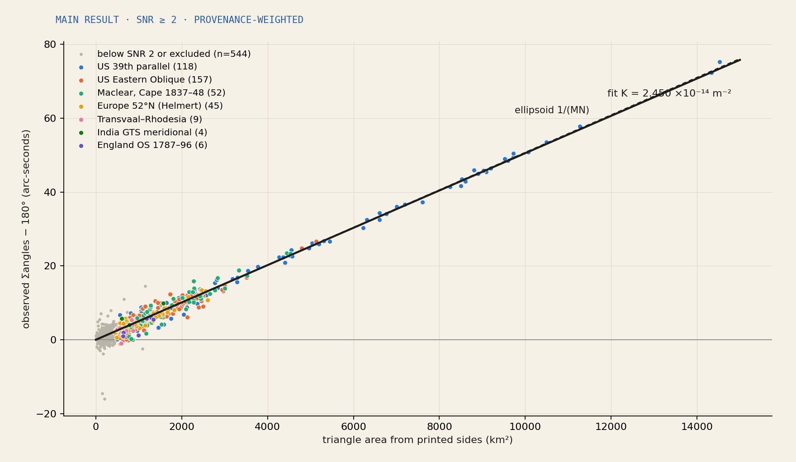
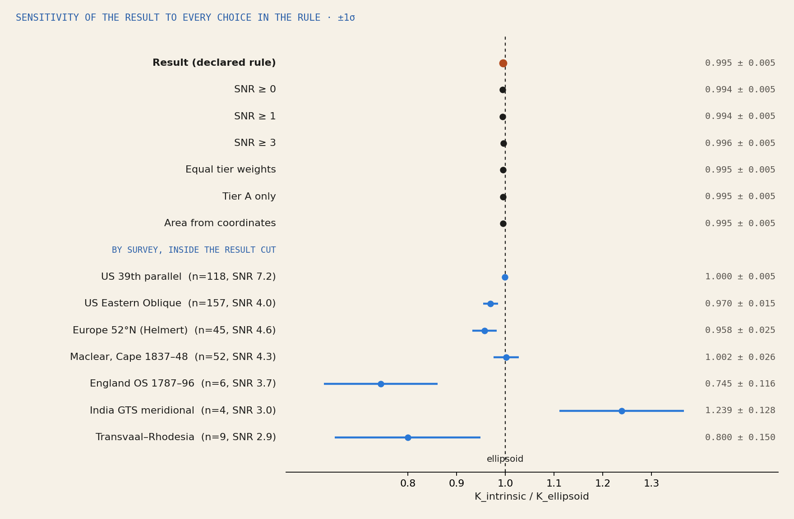
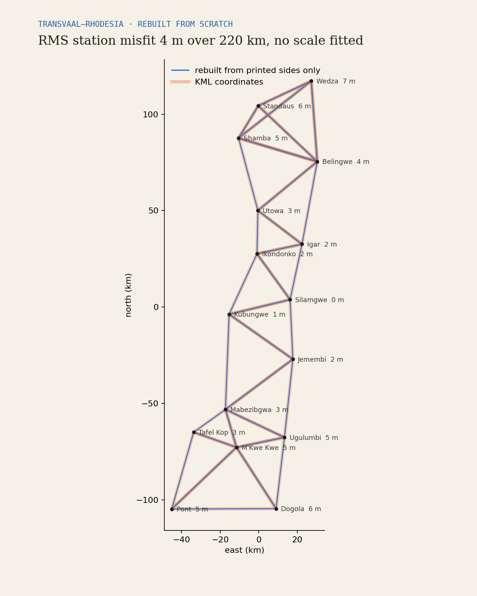
Yes, to the precision the data allow
The theorem says K depends only on measurements made within the surface, and that this intrinsic value equals κ₁κ₂ for any embedding. A data set cannot break a theorem. What it can test is the empirical claim behind using one: that a curvature measured only from angles and distances on the ground matches the curvature of the ellipsoid that the same ground sits on in space.
- Intrinsic K is positive. A flat surface (K = 0) is rejected at over 100σ.
- Intrinsic and extrinsic K agree. Under the declared rule, q = 0.995 ± 0.005 (−1.0σ), or ± 0.008 (−0.6σ) allowing for survey-to-survey scatter. The best single survey, the 39th parallel, gives 1.000 ± 0.005. It is an inductive finding with the error bar shown, not a proof.
- Latitude dependence is not resolved. 1/(MN) changes only 0.7% between India (13°) and the 52° arc, smaller than any single survey's error. The data confirm a mean curvature, not the shape of K(φ).
Limits of the test. In the main result, areas come from printed side lengths, so K uses only ground measurements: angles, and baselines carried through the chain of triangles. The coordinate-based area gives the identical result, so neither source biases it. The printed spherical excesses are not evidence at all. Their ratio to A·Kell has a median of 1.000 (IQR 0.999–1.001, n = 979): the surveyors computed them from area and an assumed radius, so they only confirm the coordinates. The test uses observed angle sums throughout. The overall deficit is now 0.5% and not significant. Appendix A suggests it may be a constant offset of about −0.15″ per triangle, from how angles were reduced, rather than a curvature difference. Two surveys still read low on their own: the Eastern Oblique Arc (0.970 ± 0.015) and Helmert (0.958 ± 0.025), about 0.6–0.8″ on a 20″ triangle. Station height (about 0.1%) does not explain it. The 2–3σ outliers (England, Anglo-French, India, Eastern Oblique) more likely reflect angles reduced or station-adjusted differently than the US tables, which needs checking page by page against the sources.
The noise-dominated triangles do not change the answer
The result uses only triangles whose expected excess is at least twice their noise. Here every usable triangle is fitted. The fit weights each triangle by area squared, so the small ones carry almost no weight and the result barely moves.
| Fit | triangles | ratio K / K_ell |
|---|---|---|
| All triangles, declared weighting (SNR ≥ 0) | 935 | 0.994 ± 0.005 |
| Result (SNR ≥ 2) | 391 | 0.995 ± 0.005 |
Constant-offset check (added after seeing the data). If the way angles were reduced added the same small error to every triangle, whatever its size, a straight line through the origin would read it as a change in curvature. Adding a constant term, ε = q·A·Kell + b, tests for that. Only the small triangles can pin down b.
| Fit with constant term | triangles | ratio q | constant b per triangle |
|---|---|---|---|
| All | 929 | 1.001 ± 0.005 | −0.15″ ± 0.05″ |
| Signal under 2× noise only | 536 | 0.87 ± 0.09 | +0.07″ ± 0.14″ |
| Signal at least 2× noise only | 393 | 1.006 ± 0.006 | −0.25″ ± 0.10″ |
With the constant allowed, the ratio is 1.001, and the remaining 0.5% shortfall moves into an offset of about −0.15″ per triangle (2.7σ). That pattern fits a small systematic in how angles were reduced, such as corrections for instruments set up off-centre, better than a real difference in curvature. Because this test was chosen after the main result was seen, it is a lead to check against the station records in Schott 1900 and 1902, not a finding. Cassini–Lacaille (±15″ noise) is left out of this check.
Summing non-overlapping triangles along each chain
Gauss–Bonnet holds for any closed region, not only single triangles. The excess of a whole chain is the sum of the excesses of triangles that tile it without overlap. Overlap has to be avoided: braced quadrilaterals give four triangles over the same ground, and summing them all would count that area twice.
Method. In each core survey, triangles were taken largest first and kept if less than 1% of their area overlapped those already kept. The choice used area only, never the observed angles. K = Σεobs / ΣA, with areas from printed sides. The noise is σclosure·√n. That is an upper bound: angles round a shared interior station partly cancel in the sum.
| Chain | triangles used | area | Σ excess observed | Σ expected | noise | K / K_ell | per-triangle shortfall |
|---|---|---|---|---|---|---|---|
| US 39th parallel | 241 of 449 | 322,644 km² | 1,604.3″ | 1,638.3″ | ±19.5″ | 0.979 ± 0.012 | −0.14″ |
| US Eastern Oblique | 114 of 267 | 112,582 km² | 539.5″ | 571.8″ | ±14.9″ | 0.944 ± 0.026 | −0.28″ |
| Maclear, Cape | 18 of 64 | 43,540 km² | 230.5″ | 221.4″ | ±7.7″ | 1.041 ± 0.035 | +0.51″ |
| Core three combined | 373 | 478,766 km² | 2,374.4″ | 2,431.5″ | ±25.7″ | 0.977 ± 0.011 | −0.15″ |
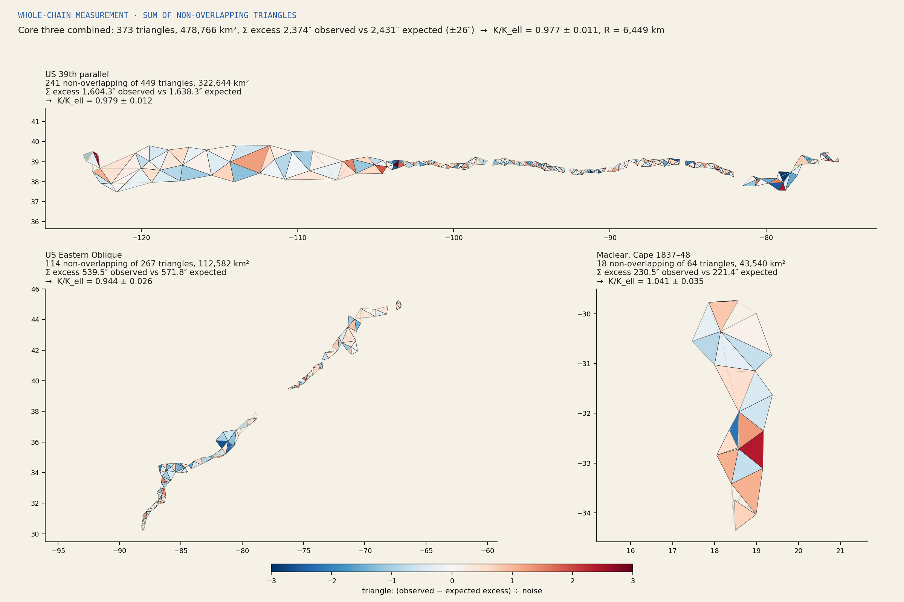
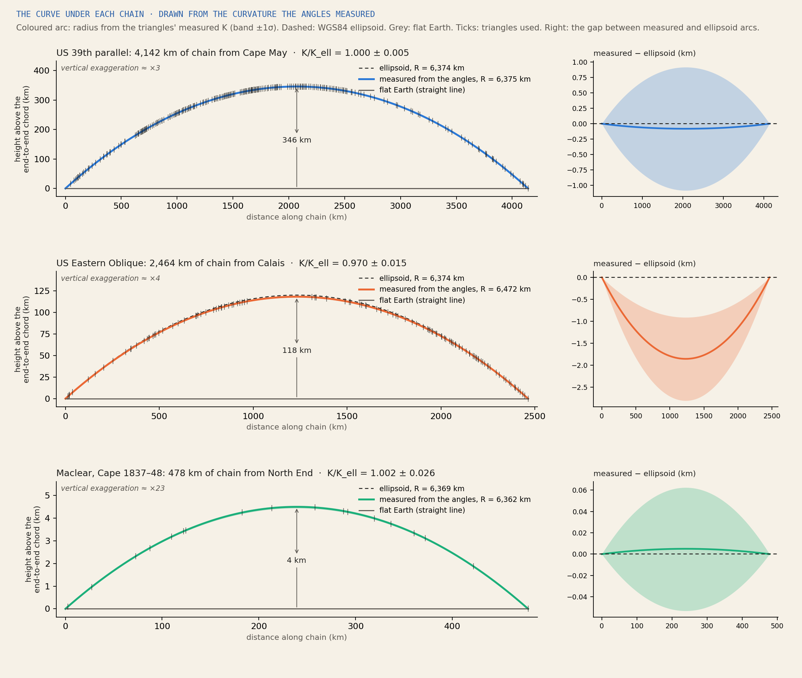
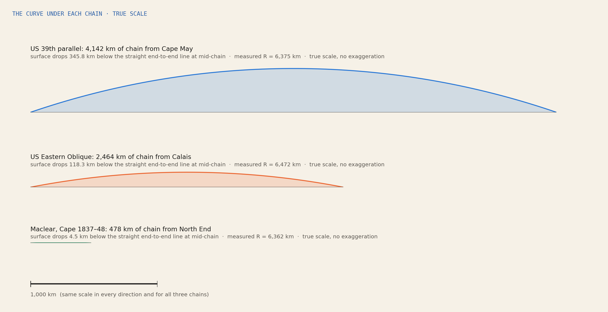
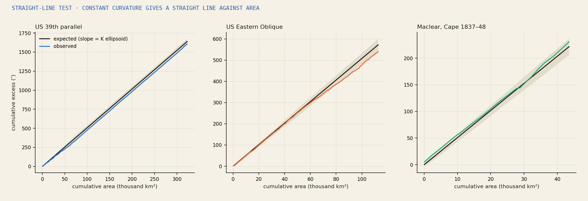
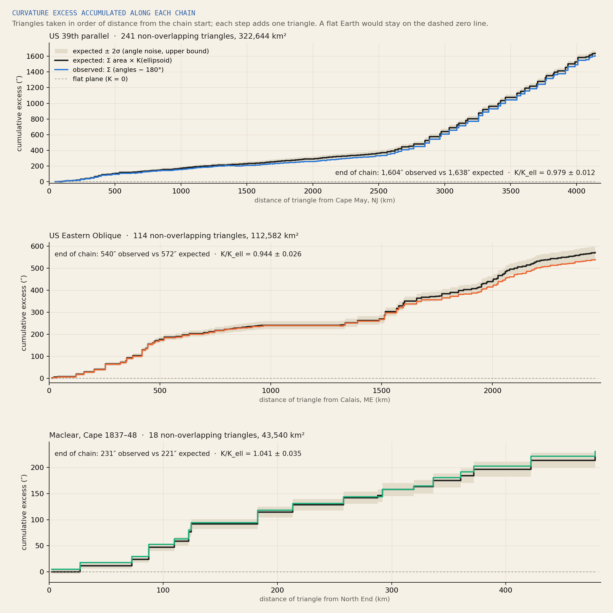
Reading it. Over 479,000 km² the chains show 2,374″ (about 40 arc-minutes) of excess, against 2,432″ expected, a ratio of 0.977 ± 0.011. That is lower than the per-triangle result (0.995), and the reason is instructive. A chain sum counts every triangle equally, while the fit weights them by area squared. So a constant error per triangle hurts the sum far more. The shortfall works out to −0.15″ per triangle, the same as the −0.15″ ± 0.05″ constant offset found independently in Appendix A. With that offset removed, the chain sum also returns K ≈ Kell. Both checks point to one thing to confirm in the original reports: a small, uniform reduction in the printed angle sums of the order of 0.1–0.3″.
All 935 triangles, coordinate areas: seven of nine networks detect positive curvature at more than 5σ
| Survey | n | mean φ | σ closure ″ | q = K_obs/K_ell | K_obs ×10⁻¹⁴ | 1/√K km | √(MN) km | z vs 1 |
|---|---|---|---|---|---|---|---|---|
| US 39th parallel | 449 | 38.8 | 1.38 | 0.998 ± 0.005 | 2.458 ± 0.013 | 6378 | 6373.5 | −0.3 |
| US Eastern Oblique | 267 | 36.8 | 1.43 | 0.967 ± 0.014 | 2.382 ± 0.036 | 6480 | 6372.1 | −2.3 |
| Maclear, Cape 1837–48 | 64 | −32.6 | 1.97 | 1.007 ± 0.027 | 2.483 ± 0.066 | 6346 | 6369.1 | +0.3 |
| Europe 52° N (Helmert) | 61 | 51.0 | 1.13 | 0.956 ± 0.026 | 2.346 ± 0.063 | 6529 | 6382.5 | −1.7 |
| England OS 1787–96 | 42 | 50.6 | 1.46 | 0.756 ± 0.098 | 1.86 ± 0.24 | 7343 | 6382.3 | −2.5 |
| Anglo-French 1787 | 19 | 51.2 | 1.12 | 0.39 ± 0.29 | 0.95 ± 0.72 | 10250 | 6382.7 | −2.1 |
| Transvaal–Rhodesia | 17 | −21.3 | 1.36 | 0.82 ± 0.12 | 2.02 ± 0.29 | 7039 | 6362.4 | −1.6 |
| India GTS meridional | 10 | 13.0 | 1.25 | 1.32 ± 0.11 | 3.25 ± 0.28 | 5545 | 6359.1 | +2.8 |
| Cassini–Lacaille 1739 | 6 | 43.6 | 12.1 | 1.2 ± 1.3 | 2.9 ± 3.1 | 5841 | 6377.0 | +0.2 |
| Pooled (inverse-variance) | 935 | 0.993 ± 0.009 | 2.446 ± 0.022 | 6395 | 6373.6 | −0.8 |
The pooled error bar is inflated by the Birge factor √(χ²/dof) = √(27.3/8) = 1.85, because the surveys scatter about each other more than their internal closures predict. A single-parameter fit of K to all 935 triangles, with no ellipsoid in the model at all, gives K = 2.448 ± 0.026 ×10⁻¹⁴ m⁻², or R = 6392 ± 34 km.
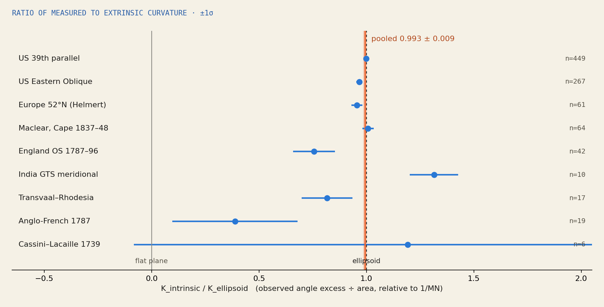
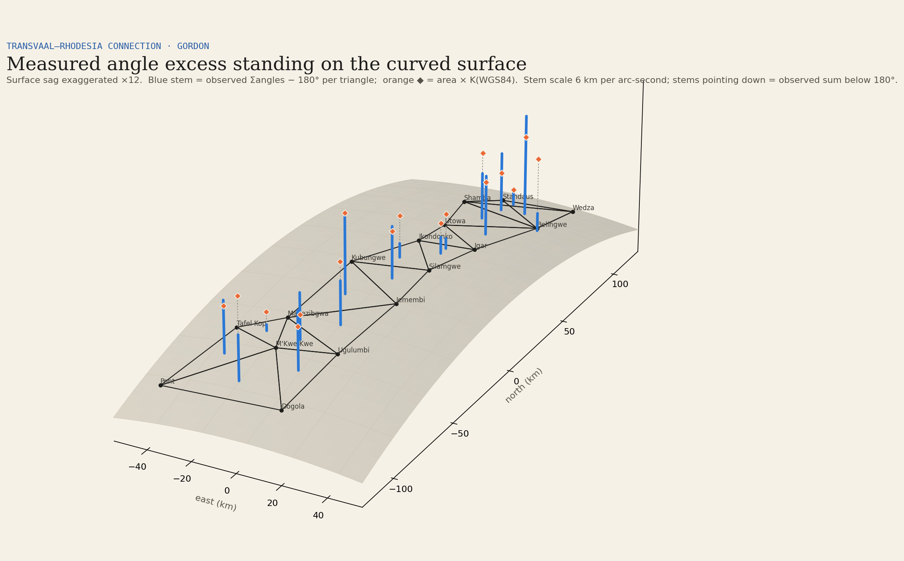
The Mount Shasta – Mount Helena heliotrope line
The longest line in these networks was observed by heliotrope between Mount Shasta and Mount Helena (now Mount Saint Helena), California, in 1879. Some sources give 1878. The Survey quoted it as 192 miles. From the summit coordinates it is 306 km (190 miles). Mount Helena is a station in the 39th-parallel net; Mount Shasta is not in this KML.
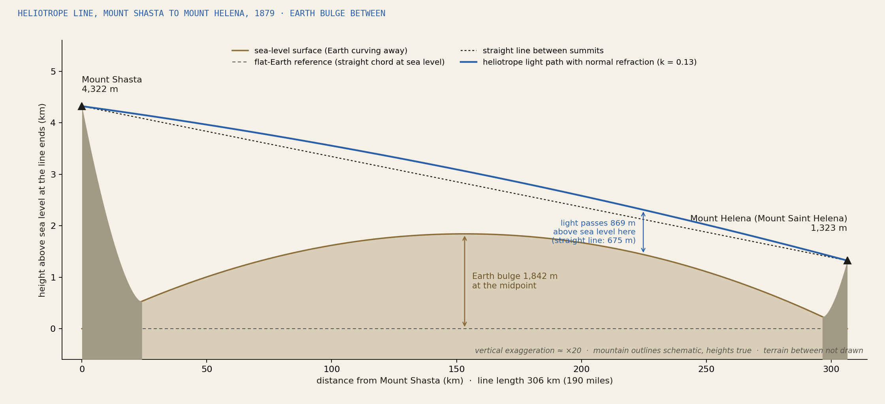
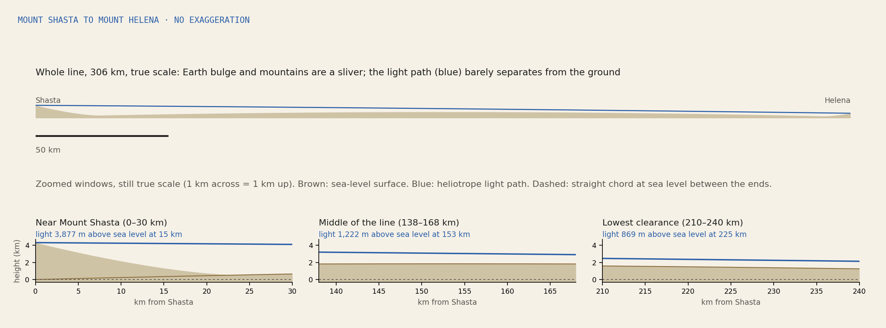
| Value | |
|---|---|
| Mount Shasta summit | 4,322 m (41.4089° N, 122.1950° W) |
| Mount Saint Helena summit | 1,323 m (38.6693° N, 122.6335° W) |
| Line length (WGS84 geodesic) | 306.5 km (190 mi) |
| Earth bulge at mid-line | 1,842 m |
| Lowest clearance, straight line | 675 m, at 216 km |
| Lowest clearance, refracted (k = 0.13) | 869 m, at 225 km |
The longest line in the KML. Uncompahgre Peak (4,355 m) to Mount Ellen, 294.1 km, appears as a printed side in Schott 1900. It is the photographed example below, and the KML's coordinates give the same 294.1 km.
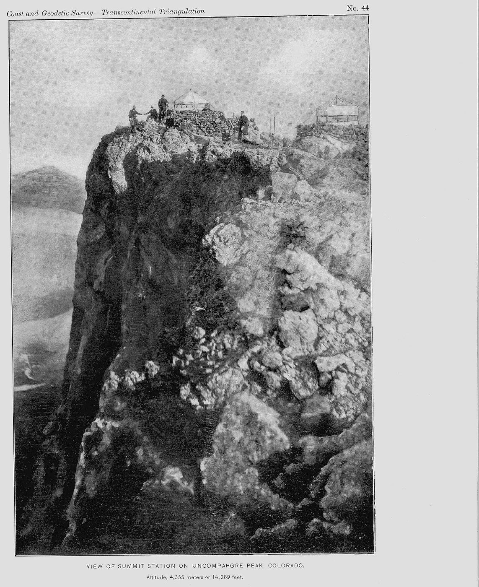
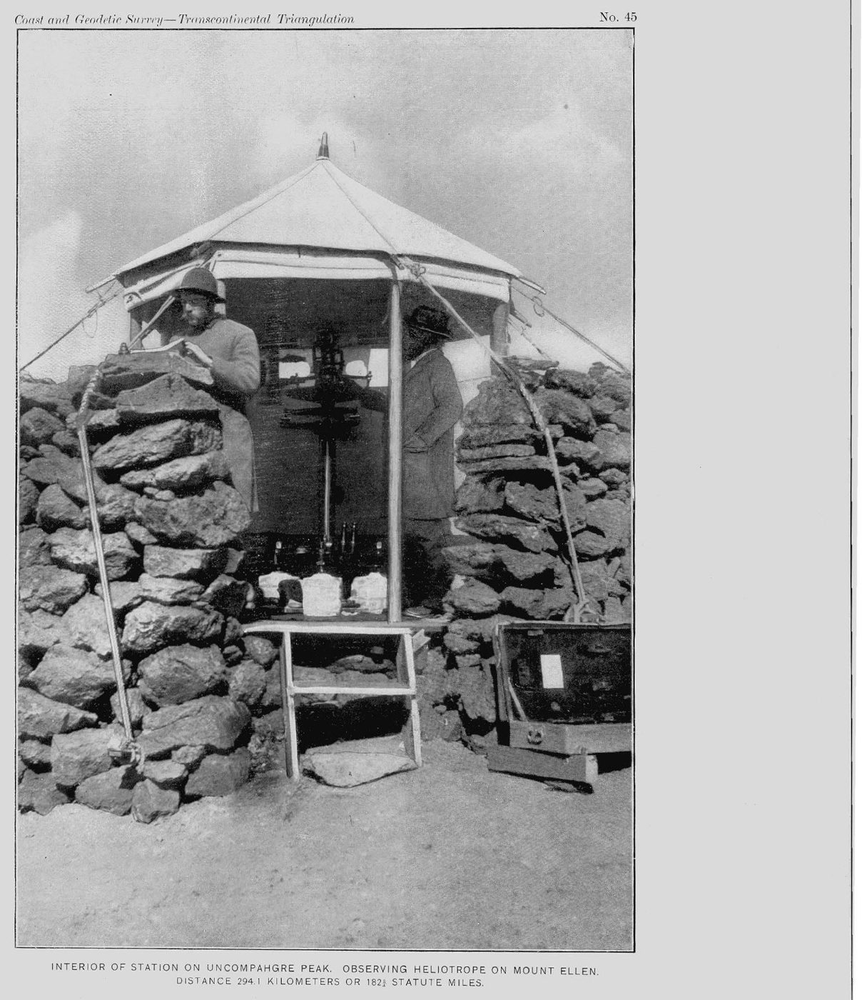
This is why the long western lines needed high peaks at both ends: from sea level, a 306 km sight would be hidden behind nearly 2 km of curved Earth. The angle measured along this line is part of the evidence for curvature, and the line could only be observed because of that same curvature's geometry.
- Roy 1790, triangles from p. 172 ff. and the Table of General Results facing p. 232 (
roy1790,legendre1789). Quote, triangle I:angles printed: "42 2 32", "67 55 39", "70 1 48"; angle sum printed: "179 59 59"; spherical excess printed: "0.29"
- Roy 1790; Williams & Mudge 1795–1801 (
dalby1790,williams1795,mudge1801): England arcs near 50° 44′ N, observed column used. - Maclear 1866, triangle tables near p. 534 (
maclear1866). Quote:angles printed: "33 37 47.12", "44 53 24.99", "101 28 48.55"; angle sum printed: "180 0 0.66"; spherical excess printed: "0.541"
- Helmert 1893, p. 150 ff. (
helmert1893,boersch_krueger1896). Quote, Dreieck Nr. 1:"43° 41′ 34,37″ (final; observed 34,35″, v +0,02″)" … ε = 1,99″
- Cassini de Thury 1744, pp. 102, 262 (
cassini1744): angles reduced to centre and horizon. - Brousseaud 1839, p. 161 (
brousseaud1839): angles in grades, excluded. - Lambton 1816a/b, 1820, 1811 (
lambton1816a,lambton1811). Quote, p. 48:Suddragherry – Nagamalli – Sekundermalli: "25 48 40.85", "91 36 14.5", "62 35 8.63"; sum "180 0 3.98"; excess "2.06"
- Morris & Gill 1908, Geodetic Survey of South Africa Vol. V, pp. xxx–xxxiii (
morris_gill1908). Quote:Pont – Dogola – M'Kwe Kwe: "43 24 45.77", "57 21 36.46", "79 13 40.18"; spherical excess "4.41"
- Schott 1900, US Transcontinental Triangulation (39th parallel), e.g. p. 364 (
schott1900). Quote:Osbornes Ruin – Pooles Island – Finlay: "77 29 15.76", "54 27 12.11", "48 03 34.63"; angle sum "02.50"; excess "1.09"
- Schott 1902, Eastern Oblique Arc, e.g. p. 110 (
schott1902). Quote:Trescott Rock – Howard – Cooper: "74 05 21.565", "65 42 24.018", "40 12 17.540"; excess "0.832", "0.833", "0.833"
- NOAA Special Publication NOS NGS 5, Geodetic Surveys in the United States: base years and apparatus, theodolites, heliotropes, apparatus accuracies.
- Smith, FIG 2006, "LaCaille, Maclear, Gill: Meridian Arcs": Zwartland base dates and length, Colby bars, Maclear's instruments.
- 1911 Encyclopædia Britannica, "Earth, Figure of the": 39th-parallel base totals, arc results with probable errors, Ordnance Survey instruments.
- IISc summary of the Trigonometrical Survey: Lambton's bases, chain and theodolites.
- Schott 1902, pp. 19–29 (archive.org OCR): observing period, Epping base, direction probable errors, plate list.
- Summit elevations: Mount Saint Helena 1,323 m (Wikipedia, NAVD 88); Mount Shasta 4,322 m (PeakVisor). Shasta–Helena line, 1879: The American Surveyor, "The Longest Line" (2012); NOAA SP NOS NGS 5.
- In this repository: the annotated source pages in sources/Source_Schott1900_triangle_tables_pp414-591_annotated.pdf and Source_Schott1902_triangle_table_p131_annotated.pdf (green = verified, red = misprint); the plates in Source_Schott1900_plates.pdf and Source_Schott1902_plates.pdf; the workbook supplemental/Curvature_from_triangles.xlsx, where the main result recalculates from formulas; per-triangle data in data/triangles_rule.csv; the input KML; the rule in RULE.md; and the scripts.
- Analysis rule:
RULE.md, written before the main run. Side units: English foot 0.3048 m; toise 1.949036 m. - Ellipsoid: WGS84, a = 6 378 137 m, 1/f = 298.257223563. Coastlines: GSHHG low resolution via Basemap.